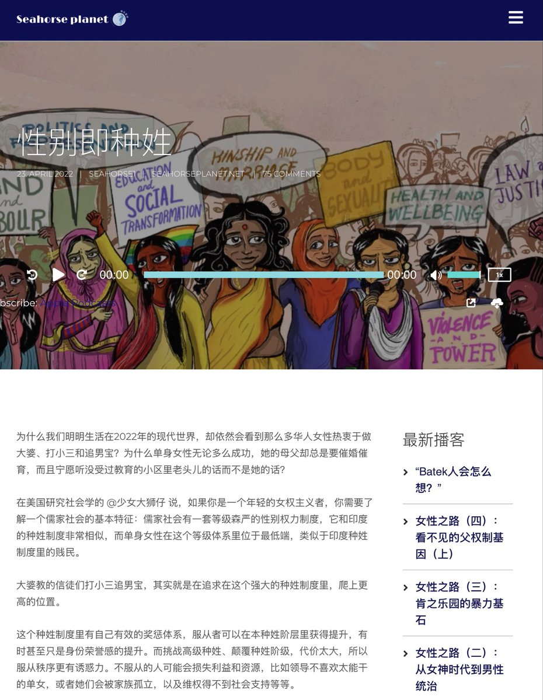

amber
@amber_medusozoa
关于印度人发明的那个士农工商的中国种姓制度，我觉得它的主要问题其实是缺乏想象力。实际上你们老中的长幼尊卑孝悌男女夫妻纲常之类的行为规训，在恶臭程度和种姓制度完全不相上下，一等洋人二等官三等少民四等汉之类的说法也一直都有，人家用种姓制度类比反而是因为没领略到咱的传统和现代文化在吃人方面可以多有创意。
不过你们老中对印度本身也是充满种族主义凝视，像激女圈之前都提过类似的什么性别种姓制就是如此，在完全不适配的语境里挪用对方的话语给自己当政治养料，那被对方反过来东方主义凝视一下不也很正常
